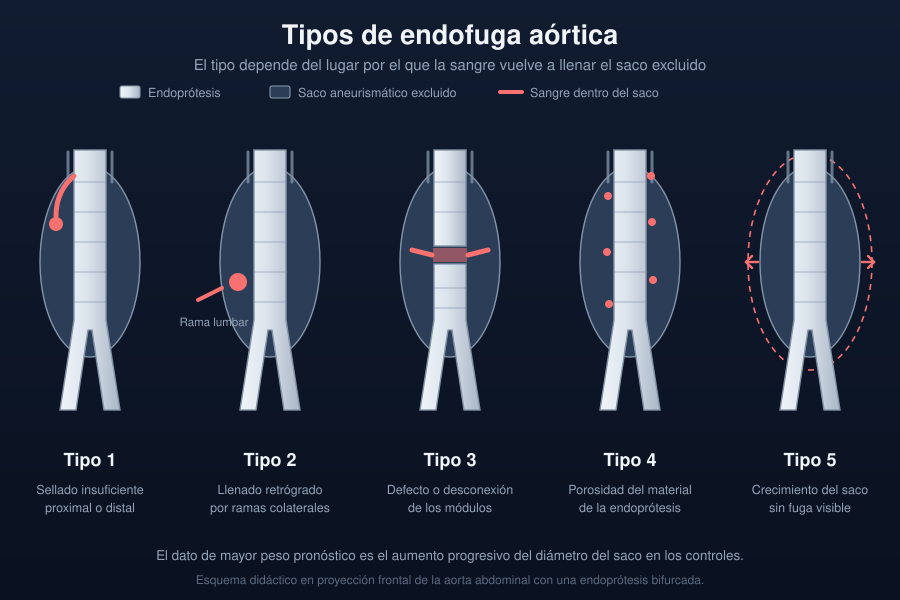

Ficha del catálogo
Endofuga tras reparación endovascular de la aorta
- Sistema
- Cardiovascular
- Modalidad
- TC
- Región
- Abdomen
- Dificultad
- Avanzado
Es la persistencia de flujo sanguíneo dentro del saco aneurismático excluido después de colocar una endoprótesis aórtica. Constituye la complicación más frecuente del tratamiento endovascular y mantiene el riesgo de crecimiento y rotura del saco. Su detección y su tipificación guían la decisión entre vigilancia y reintervención.
Técnica
El seguimiento se hace con angiotomografía en varias fases, ya que la fuga puede aparecer solo en la adquisición tardía. La serie sin contraste es imprescindible para no confundir calcificaciones del saco o material embolizante con contraste extraluminal. El ultrasonido con contraste es una alternativa sensible que evita radiación en controles repetidos.
Qué observar
- Presencia de contraste dentro del saco y fuera del cuerpo de la endoprótesis
- Momento de aparición del contraste, en fase arterial o solo en fase tardía
- Relación de la fuga con los sellados proximal y distal
- Permeabilidad de arterias lumbares y de la mesentérica inferior que llenan el saco
- Cambio del diámetro máximo del saco respecto a los controles previos
- Integridad de la endoprótesis, migración, angulación o desconexión de módulos
Hallazgos
Se identifica material de contraste dentro del saco, separado de la luz de la endoprótesis, y su localización orienta el tipo. El contraste junto al cuello proximal o al sellado iliaco sugiere fuga de sellado, mientras que un foco periférico posterior conectado con arterias lumbares indica llenado retrógrado por ramas. El dato de mayor peso pronóstico es el aumento progresivo del diámetro del saco.
Perlas
Sin la serie sin contraste es fácil informar una endofuga inexistente, porque las calcificaciones del saco, el material de embolización y los fragmentos metálicos aparecen hiperdensos en la fase con contraste y solo la comparación directa con la adquisición simple permite descartarlos.
Diagnóstico diferencial
- Calcificación parietal del saco
- Ya es hiperdensa en la serie sin contraste y no cambia de densidad entre fases.
- Material de embolización previo
- Presenta densidad muy alta y morfología irregular estable en controles sucesivos.
- Infección de la endoprótesis
- Aparecen gas, colecciones periprotésicas y cambios inflamatorios con fiebre, sin contraste dentro del saco.
- Crecimiento del saco sin fuga demostrable
- El saco aumenta pero no se observa contraste en ninguna fase, situación conocida como endotensión.
Simuladores
- Artefacto por endurecimiento del haz junto a las estructuras metálicas
- Calcio parietal del saco confundido con contraste
- Reflujo de contraste en una vena adyacente al saco
Por modalidad
- TC
- Detecta y localiza la fuga, mide el saco y valora la integridad y la posición de la endoprótesis.
- US
- El estudio con contraste ecográfico muestra flujo dentro del saco en tiempo real y evita radiación en el seguimiento.
Protocolo
Angiotomografía abdominopélvica con serie sin contraste, fase arterial y fase tardía en torno a los tres minutos. Se emplean cortes finos y algoritmos que reducen el artefacto metálico. El informe debe registrar siempre el diámetro máximo del saco medido en el mismo plano de referencia que los estudios previos.
Clasificación
Las endofugas se agrupan en cinco tipos. El tipo 1 corresponde a sellado insuficiente proximal o distal, el tipo 2 al llenado retrógrado por ramas colaterales como las lumbares o la mesentérica inferior, el tipo 3 a un defecto o una desconexión de los módulos, el tipo 4 a la porosidad del material y el tipo 5 al crecimiento del saco sin fuga visible.
Errores frecuentes
- Prescindir de la serie sin contraste y confundir calcio con fuga
- Realizar solo fase arterial y perder fugas de bajo flujo
- No comparar el diámetro del saco con los controles previos

endofuga endoprótesis aorta abdominal seguimiento fase tardía aneurisma tratamiento endovascular